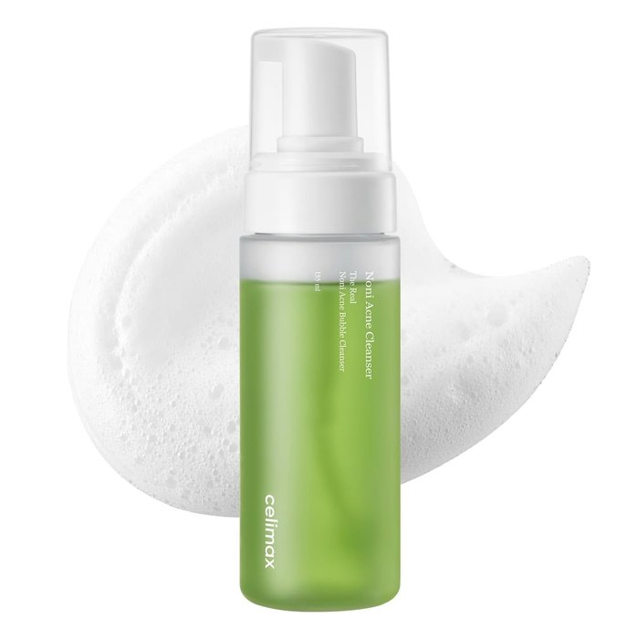

S/65Última unidad155 ml
Celimax
The Real Noni Acne Bubble Cleanser
Beneficios
- Limpia en profundidad sin dejar la piel tirante
- Textura en espuma, muy suave al aplicar
- Ayuda a controlar el exceso de grasa
- Con extracto de noni, que calma la piel
- Apto para uso diario, mañana y noche
Tipo de piel
Piel mixta, grasa y con tendencia a imperfecciones
Lo quiero